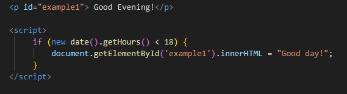
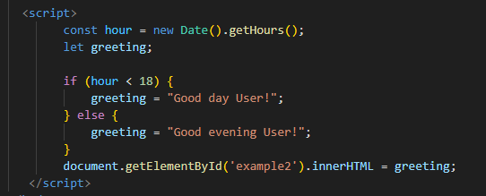

Conditional statements are used to perform different actions based on different conditions.
Use the if statement to specify a block of JavaScript code to be executed if a condition is true.
Note that if is in lowercase letters. Uppercase letters (If or IF) will generate a JavaScript error.
Display "Good day!" if the hour is less than 18:00:
Good Evening!
Use the else statement to specify a block of code to be executed if the condition is false.
A time-based greeting:
Use the else if statement to specify a new condition if the first condition is false.
If time is less than 12:00, create a "Good morning" greeting, if not, but time is less than 16:00, create a "Good afternoon" greeting, otherwise a "Good evening":